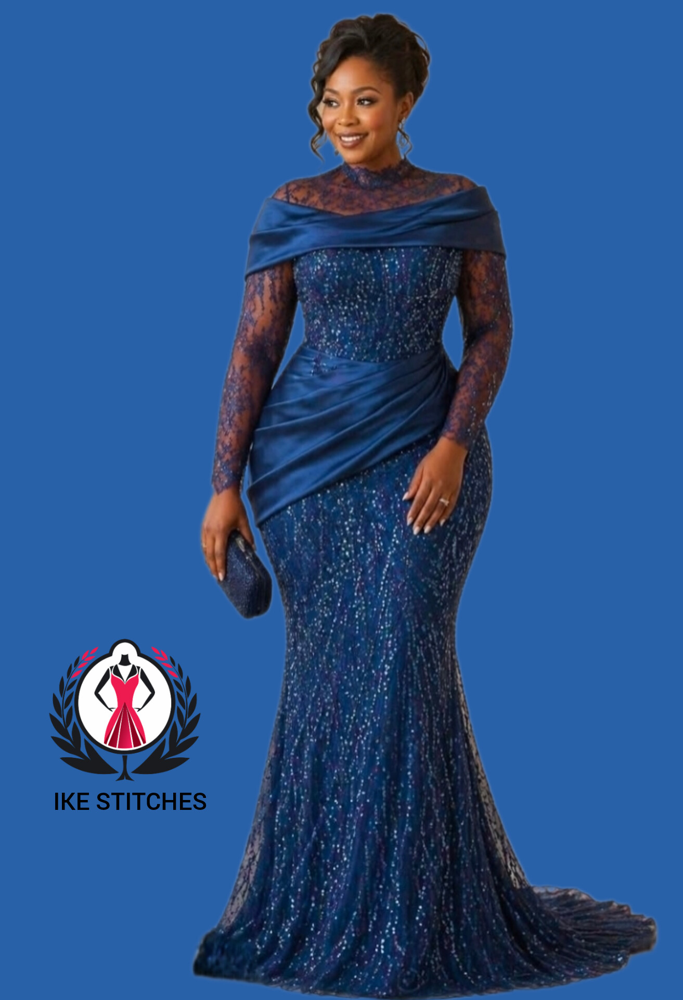
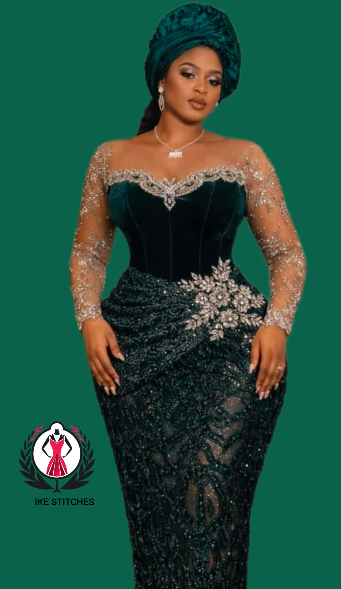

Luxury Lace
Luxury Lace Fashion Trends In 2026
May 2026
IKE-STITCHES
Lace fashion continues to dominate luxury African styling with elegance, class and sophistication. From wedding guest gowns to bridal receptions, lace remains one of the most demanded premium fabrics in modern tailoring.
Lace fabrics have maintained their luxury status because of their rich texture, detailed embroidery and elegant appearance. Designers now combine lace with satin, corset structures and modern sleeve styles to create breathtaking outfits suitable for weddings, dinners and special occasions.

Fashion lovers are embracing several beautiful lace styles in 2026 including:
When selecting lace fabric, quality is extremely important. High quality lace usually has clean embroidery, soft finishing and durable texture. Color selection also plays a major role. Gold, champagne, emerald green, wine and royal blue lace styles are currently among the most popular choices for luxury events.

To achieve a complete luxury appearance, combine your lace outfit with:
“Perfect tailoring transforms ordinary lace into a luxury masterpiece.”
Modern African fashion has elevated lace into a global luxury trend. Celebrities, bridal stylists and fashion influencers continue to showcase creative lace designs that blend tradition with contemporary elegance. Today, lace is no longer reserved only for weddings. It is now widely used for:

Lace fashion continues to redefine elegance in African luxury fashion. Whether you prefer simple classy styles or dramatic statement gowns, lace remains one of the most beautiful fabrics for premium tailoring. With proper styling and quality finishing, a lace outfit will always deliver sophistication, confidence and timeless beauty.
← Back To Blog